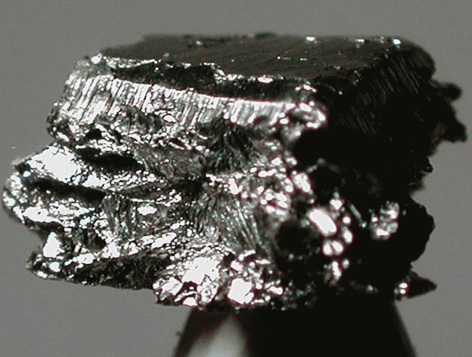

Иридий

Ири́дий (химический символ — Ir, от лат. Iridium) — химический элемент 9-й группы (по устаревшей классификации — побочной подгруппы восьмой группы, VIIIB), шестого периода периодической системы химических элементов Д. И. Менделеева, с атомным номером 77.Простое вещество иридий — очень твёрдый, тугоплавкий, серебристо-белый переходный металл платиновой группы, обладающий высокой плотностью и сравнимый по этому параметру только с осмием (плотности Os и Ir практически равны с учётом погрешности теоретических расчётов). Имеет высокую коррозионную стойкость даже при температуре 2000 °C. В земных породах встречается крайне редко, поэтому высокая концентрация иридия в образцах породы является индикатором космического (метеоритного) происхождения последних
Был открыт в 1803 году английским химиком С. Теннантом одновременно с осмием, которые в качестве примесей присутствовали в природной платине, доставленной из Южной Америки. Теннант был первым среди нескольких учёных, кому удалось получить в достаточном количестве нерастворимый остаток после воздействия на платину царской водки и определить в нём ранее неизвестные металлы.
Иридий, наряду с другими драгоценными металлами, получают из анодных шламов медно-никелевого производства. Для переведения иридия в раствор промежуточные продукты переработки сплавляют с Na2O2, затем обрабатывают плав царской водкой. Действием хлорида аммония NH4Cl из полученного раствора осаждают (NH4)2[IrCl6], который прокаливают до получения металлического иридия. Объём мирового производства иридия около 8 т/год (2020).Иридий используют для изготовления тиглей (для выращивания монокристаллов полудрагоценных камней и лазерных материалов); фольги для неамальгамирующихся катодов; деталей прецизионных приборов; неистираемых кончиков перьев авторучек; электродов долговечных свечей зажигания; нанесения защитных покрытий на электрические контакты и другие изделия. Сплавы иридия используют в качестве электродов термопар, термоэмиссионных катодов и др. Радиоактивный изотоп 192Ir (период полураспада T1/2 73,83 суток) применяют в источниках γ-излучения переносных толщиномеров, дефектоскопов, а также в радиотерапии злокачественных опухолей.